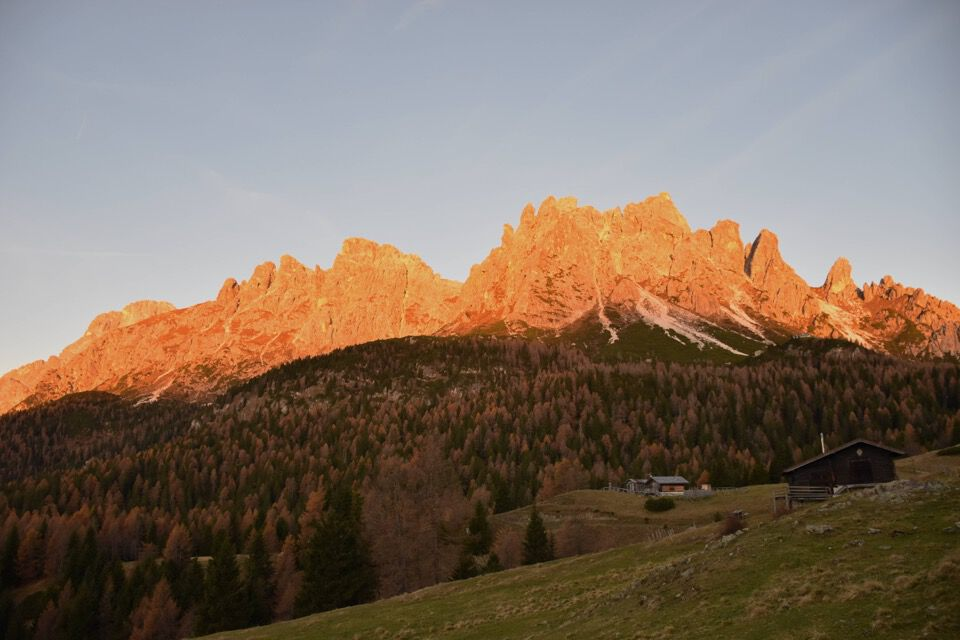
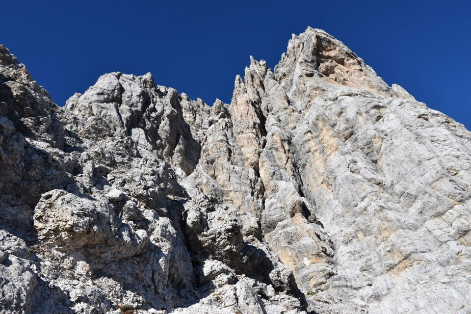
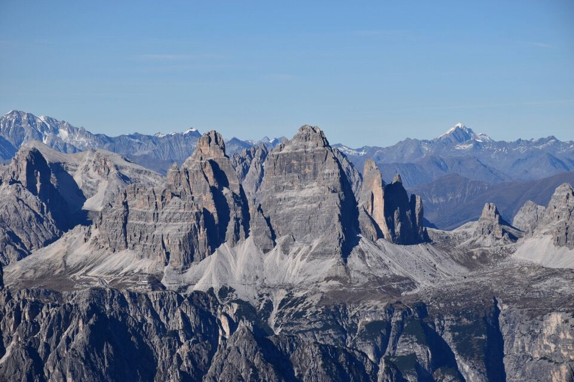
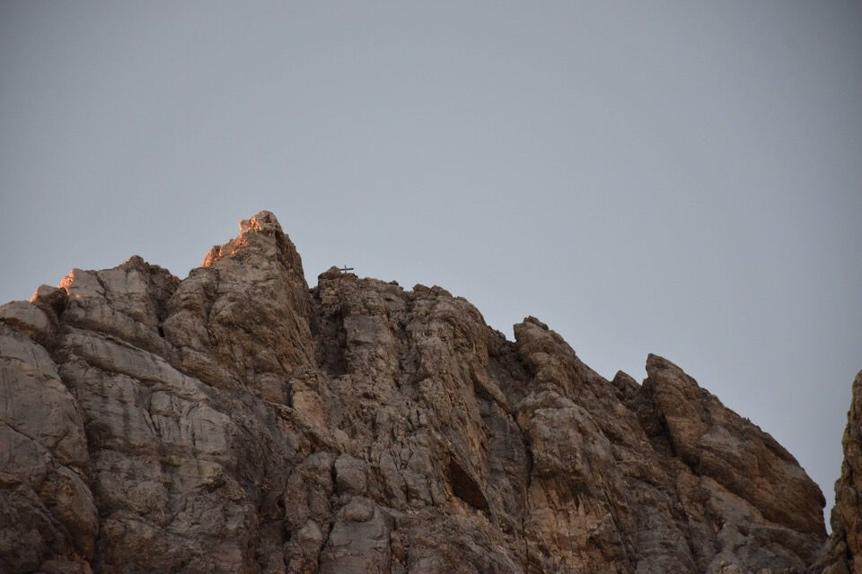

È tardi, tardissimo, ma di scendere dalla cima non ci si riesce: l'austera bellezza delle crode ci sopraffà.
Scendiamo l'ultima doppia ormai con la luce del tramonto: mai dimenticheremo questa prima volta sulle Marmarole, conclusa scendendo per il vallon del Froppa sotto un magnifico cielo stellato.
L'alba dal Pian dei Buoi ci ripaga del lungo avvicinamento in macchina.
Il rif. Baiòn con dietro l'immensa mole dell'Antelao.
Rimaniamo senza parole assistendo all'alba verso le Dolomiti di Sesto.
La Croda da Campo e l'Ajarnola, quest'ultimo visitato con Matteo un anno addietro.
Cima Bagni, Croda di Ligonto e d'Ambata: tra le più belle montagne che io conosca.
Immensa e magnifica la Croda Bianca.
Certo che quella cengia verde... (da lì si passa per andare a percorrere la via Fanton lungo lo spigolo).
Gli Spalti di Toro oggi li vediamo controluce.
Dopo un lungo traverso entriamo nel Vallon del Froppa: sentiero CAI ufficialmente, ma nella pratica non c'è un segno, e neppure siamo riusciti a trovare l'inizio del sentiero!
Siamo ai primi di novembre ma sembra di essere in agosto da quanto caldo fa. Arriveremo cotti all'attacco della via per la cima!
La parte finale, disastrata dalle precipitazioni, è molto faticosa e francamente pericolosa.
Visitiamo il biv. Fanton: bellissimo e orribile allo stesso tempo. Poveri fratelli Fanton, veri pioneri d'altri tempi di queste magnifiche crode, probabilmente tutto avrebbero voluto tranne una cosa del genere!
Comunque la vista verso la val d'Ambata e le sue crode è eccezionale.
Saliamo verso forcella Froppa, che anzi - sbagliando - proprio raggiungiamo. E forcella Kugy dov'è?
I Bastioni, una delle montagne più belle e imponenti che abbia mai visto.
Da forcella Froppa scruto il nostro monte: fa una certa impressione a vederlo, così slanciato, sapendo che proprio per quel versante dobbiamo salire.
Ritorniamo un po' sui nostri passi e iniziamo a salire verso forcella Kugy.
Magnifico e turrito il Cimon del Froppa.
In forcella Kugy.
Il passaggio iniziale, il celebre «salto Orsolina»: sembrava più facile dalle foto che avevo visto!
Ho poco da fare il purista: se non ci fosse stato quel cordino a mo' di staffa...! È un III+ strapiombante, una bella impresa per due poco più che escursionisti.
Leggi questo per un interessante resoconto sulle prime ascensioni del Cimon del Froppa: la via Kugy, attuale via comune, non è la via dei primi salitori, che salirono invece da Nord per la cresta Nord-Est.
Il bellissimo castelletto terminale del Cimon.
Gioia ed incredulità: il cielo terso di novembre e il panorama sono di una bellezza sconvolgente.

Verso Nord, con Le Selle e dietro il gruppo del Popèra.
Verso il Comelico: si riconoscono Peralba e Cogliàns.
I Tre Scarperi: si vede la strepitosa Cengia della Caccia, percorsa questo agosto.
Zillertaller Alpen, mi dicono. Verrà un giorno anche per quelle...
Le magnifiche stratificazioni del Monticello, montagna stupenda.
Foto di vetta... per qualcuno è cosa complicata...
È ora di scendere: ci rivedremo presto Marmarole.
Croda Bianca e Cresta degli Invalidi.
Torniamo a forcella Kugy: ci abbiamo messo una vita.
Pure con gli spettatori poco sotto il monte Froppa.
Chiaramente ci cade una piastrina nel baratro proprio sopra il salto difficile da scendere in doppia! Combiniamo lo stesso, ma ritrovarla sarà come cercare un ago in un pagliaio... o no?
Ormai con le luci della sera.
Scendendo da forcella Kugy tutt'a un tratto sentiamo un boato improvviso che ci fa prendere un colpo dallo spavento: peccato sbuchi fuori un elicottero, raso-terra vicino al Fanton, che poi di colpo si gira e torna indietro!
Dev'essere un elicottero turistico: tristezza infinita.
Le parole non bastano per descrivere la bellezza del tramonto su queste stupende crode.
Un ultimo saluto al Cimon del Froppa.
Si vede pure la croce: d'altronde dalla cima si è a picco sopra il bivacco.
Sarebbe così bello fermarsi qui al bivacco! Invece dobbiamo salutare questi panorami per tuffarci nuovamente nell'angusto vallon del Froppa e correre prima che faccia buio.
(Bello per modo di dire, ci sono già 20 persone su 12 posti letto: d'altronde cosa ti aspetti costruendo bivacchi a cinque stelle? Certe cose proprio non le capisco)
Per fortuna in quattro e quattr'otto siamo fuori dalla parte alta.
L'immensità delle crode è schiacciante.
Torniamo alla macchina sotto un magnifico cielo stellato.